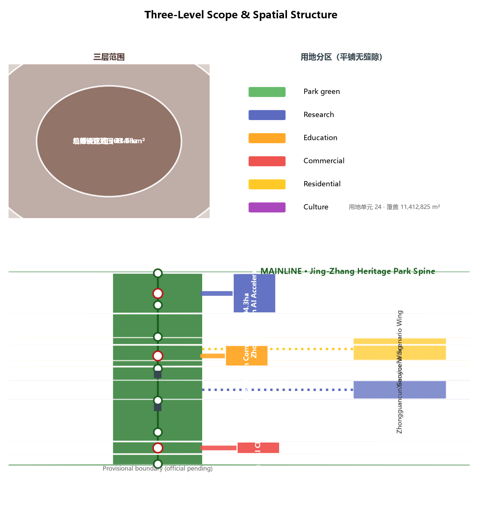
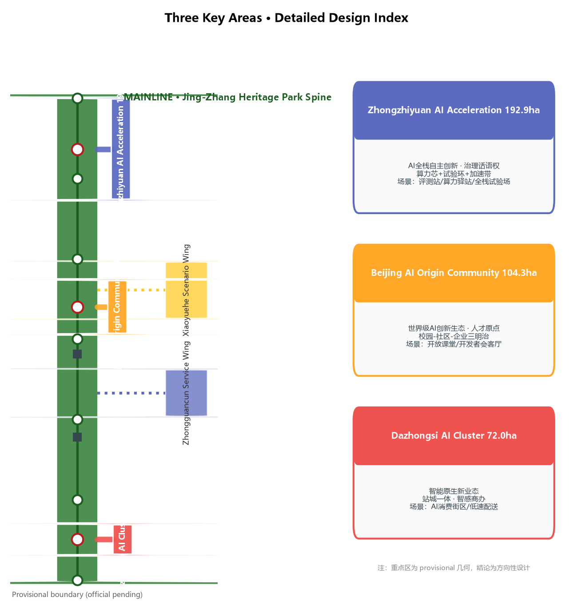
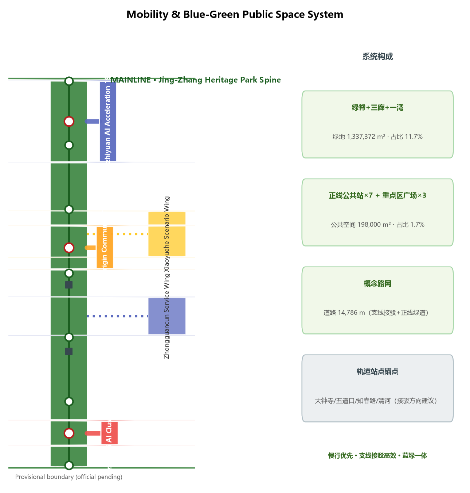

Core Metrics
Signature Mechanism · The PR Three-Cycle
Public Review · wait on stage at mainline stations; data boundaries / human review / exit conditions public
Pilot Run · branch pilots into campuses/communities/districts; restricted scope; human takeover fallback
Merge · pass pilots merge into the mainline knowledge base; failures roll back with reasons published
Overview Map

One mainline, five branches: the mainline is the Jing-Zhang Heritage Park green spine; the five branches are the three key areas and two wings. A branch is both a railway branch line and a git branch — innovation grows, is validated, and merges like a PR.
Three-Level Scope

Coordinated research 43.6 km² (strategy) → Overall design 11.4 km² (one-mainline-five-branches) → Key areas 368.4 ha (detailed design); cascading without reusing one diagram at every scale.
Key Areas

Zhongzhiyuan 192.9 ha (full-stack + governance) · AI Origin 104.3 ha (world-class ecosystem) · Dazhongsi 72.0 ha (AI-native formats) · Zhongguancun wing (capital/factors) · Xiaoyuehe wing (life/scenarios).
Land Use
24 parcels tile the submitted boundary of 11,412,825 m² with no gaps or overlaps; 1401 green / 0802 research / 0804 education / 05 commercial / 0701 residential / 0803 culture (mainline nodes 12.5 ha).
Mobility

Mainline greenway slow-traffic spine + branch connectors (15.6 km conceptual network); rail anchors: Dazhongsi/Wudaokou/Zhichunlu/Qinghe; station integration is directional, not engineering conclusions.
Blue-Green Public Space
One spine, three corridors, one bay: green-space system 133.7 ha (green_ratio 0.1172); 10 public-space nodes (7 mainline stations + 3 plazas, public_space_ratio 0.0173).
Buildings
73 conceptual buildings (footprint 445,272 m²) expressing massing direction only, not statutory floor area; FAR/height/density pending official data.
Renewal Projects
Near: mainline + Origin → Mid: Zhongzhiyuan + Dazhongsi → Long: two wings; five phases (phasing.geojson); each package lists dependencies and implementation-party directions.
AI Scenarios
12 scenario cards (S01-S12) incl. 3 industry test scenarios (T01-T03) and 5 user personas; each card has spatial anchor / privacy boundary / human review / operator.
Task Coverage
- ✔ agent.1 · Naming/Logo & concept
- ✔ agent.2 · Ecosystem cases & full-stack
- ✔ agent.3 · Scenario cards/personas/tests
- ✔ agent.4 · Public space/landmarks
- ✔ agent.5 · Culture narrative/signage
- ✔ agent.6 · Events/long-term operations
All 20 announcement tasks (1.3/1.4/1.5) + agent.1 (naming/logo) · agent.2 (ecosystem cases/map) · agent.3 (scenarios/personas) · agent.4 (public space/landmarks) · agent.5 (culture narrative) · agent.6 (events/operations) fully covered.
Self-Check Status
Deterministic validation 0 errors · Spatial review PASS (provisional notes only) · Visual packaging PASS · Professional evidence PASS → formal-review-ready
Sources
Official announcement 2026-05-09 · agent taskbook 2026-05-18 · Three-Areas-Two-Wings 2026-04-03 · Haidian 1+X+1 2026-03-02 · Urban Design Measures · Regulatory Plan Measures · Land-Use Classification Guide · PIPL/Barrier-Free/Guobanfa-45/Generative-AI Measures · Jing-Zhang history background · provisional boundaries (Issue #846)
Assumptions
A-CONTROLS-001: regulatory/redline/ownership/municipal/engineering conditions pending official materials; A-BOUNDARY-001: official polygons unpublished, OSM cross-check shows spatial uncertainty (Issue #846); full recalculation when published.